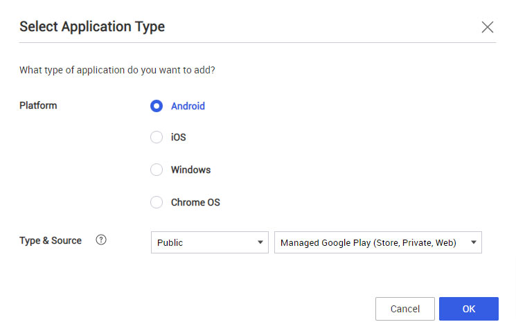
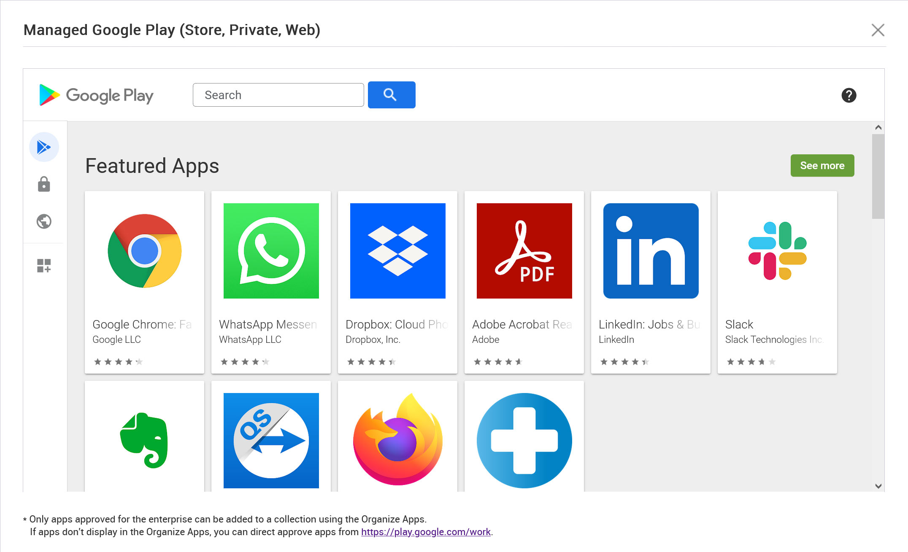
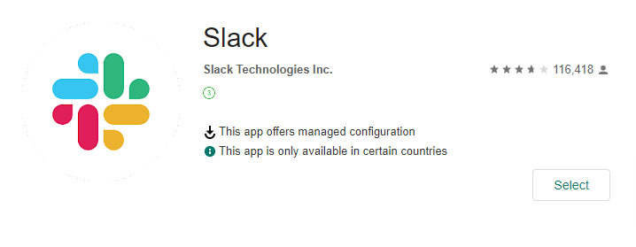

Knox Manage 22.08 release notes
Last updated July 26th, 2023
Note
Unless indicated otherwise, the term Android on this page refers to the Android Enterprise platform.
TLS Deprecation
In compliance with Payment Card Industry Data Security Standards, as of 22.08 Knox Manage no longer supports TLS 1.0 and 1.1.
Usability changes for Managed Google Play apps
In March 2022, Google announced that they would replace the legacy Google Play EMM, which many EMMs implement for configuring enterprise-level Managed Google Play (MGP) app stores.
Switching to the newer API in 22.08 has resulted in several significant changes across the Knox Manage experience for both IT admins and device users:
-
All three app types — MGP public, MGP private, and MGP web — now have the same management flows on the Knox Manage console by way of the Google Play iframe.


-
The old flow for approving an app in the Google Play iframe, which involved multiple approval steps, has been replaced by a one-click action.

-
For the purposes of categorizing apps on the MGP store on devices, the Advanced Store Layout on the Knox Manage console has been replaced with Google Play’s built-in functionality for organizing app collections.
-
Adding the Knox Service Plugin app now requires only one click.
-
If the device user removes a public app that you deployed through Knox Manage, you can no longer reinstall it by re-issuing the Install or Update App device command. Instead, make sure its Installation Type is set to Automatic (Non-removable) during assignment, then, if the app is uninstalled, send the Apply Latest Profiles command.
-
Installed MGP apps can only be updated automatically, based on a schedule set by the Auto Update Mode setting when the app is assigned. The Update to the Latest Version button on an app’s details no longer forces an app to update on devices — it now merely reminds you that the app will adhere to the auto-update schedule.
For updated descriptions of the flows for adding and assigning MGP apps, refer to Assign Managed Google Play apps and Add apps using Managed Google Play.
Updates to lock reset sequence on Android
Previously, the order of operations to reset the lock on an Android device involved setting a temporary password and relaying it to the device user. This sequence posed some security risk, because the device user could continue to use the temporary password without setting a new lock.
Starting with 22.08, the device user can no longer keep the temporary password on Android 8 and higher devices. After the lock is reset by the Reset Screen Password command, they must set a new lock before they can continue operating the device.
Improvements to Custom Wallpaper policy on Android
This release improves the recently-added Custom Wallpaper policy:
- When the policy is unset, the original wallpaper is restored.
- The custom wallpaper correctly rotates when the device switches to landscape display mode.
Support for detailed APN settings in Android policies
The Android Enterprise APN policy group has been greatly extended with new APN parameters as sub-policies:
Fix for version status of beta Android apps
Previously, an app’s Version field on the Application Detail page was blank if the app had the beta attribute on Google Play.
Starting with 22.08, the detail page correctly reports the version of apps in beta.
App tracks for Android apps
When assigning an Android app, if you set it to install automatically, you can now also choose to put it on an app track through the Use App Track settings.
Android policy additions
The new App Prevented from Using Mobile Data Setting policy allows you to prevent individual apps from using mobile data. This policy is supported on devices running Android 10 and higher.
Knox Manage agent on Shared iPad
With this release, the Knox Manage agent is now supported on Shared iPads. Like with other supported device platforms, the agent provides an interface where device users in your enterprise can install recommended or optional apps in the course of business. For the 22.08 release, internal apps and apps assigned through the Apple Volume Purchase Program (VPP) are supported in the store. Similar to other apps for Shared iPad, you assign and automatically install the agent through the VPP. Once installed, managed device users can access the agent to install internal and VPP apps, while guest users in temporary sessions can’t.
Additionally, when the Knox Manage agent is deployed, you can configure a Day & Time event for the iOS profile.
Device commands for Knox Manage agent on Shared iPad
Coming in sync with the support for the Knox Manage agent, Shared iPads can now receive device commands when an active Managed Apple ID session is in progress. When the agent is installed on the device, the commands are available during these sessions on the Shared Device tab of the Device Detail page. For 22.08, the following commands are available during these sessions:
-
Application > Apply Latest Internal App Information
-
Device Info > Collect Current Location
-
Knox Manage >
Extension of managed app settings for public iOS apps
Beginning with Knox Manage 22.08, you can configure managed values (key-value pairs) for public iOS apps in addition to private apps.
See Add public apps using iOS App Store for more details.
iOS policy additions
The following new iOS policies are available in Knox Manage 22.08. These policies primarily concern the restriction of core Apple services and technologies:
-
System >
-
Application >
-
Share >
-
iCloud >
Samsung Knox Manage on the Azure AD app gallery for cloud-based MDM
Previously, the Knox Manage app was only available on the Azure portal as an on-premises app.
This release adds the Samsung Knox Manage app to the Azure AD app gallery in the Mobility (MDM and MAM) category, making it available as a cloud or SaaS MDM app for Azure AD tenants. This cloud-based MDM provides the same capabilities as its on-premises counterpart, those being easily syncing user and group information with Knox Manage based on the Microsoft Graph API, and enrollment for Windows devices.
For instructions on how to migrate to the new app, see Sync user information with Azure AD through Microsoft Graph API.
Improvements to Azure AD integration flow
With the addition of the Samsung Knox Manage cloud/SaaS MDM app to the Azure portal, you no longer need to configure Azure AD with Knox Manage as an on-premises sync service. The Azure AD Integration page on the Knox Manage console has consequently been revamped to require only a directory ID, without an app ID or the other on-premises information. This improvement significantly cuts down on configuration and confirmation time when bridging Azure AD with Knox Manage.
Learn about the simplified procedure in Sync user information with Azure AD through Microsoft Graph API.
Support for Azure AD registered and Azure AD joined devices
With 22.08, devices provisioned through the Knox Manage app in Azure AD now comply as Azure AD registered and Azure AD joined devices:
- Azure AD registered devices are BYOD devices such as employee-owned laptops and phones, and connect the user to Azure AD. The user account is provisioned through their Windows account.
- Azure AD joined devices are company-owned devices such as work laptops, and connect the user to Azure AD. The account is provisioned through the user’s Windows account, a Windows provisioning PPKG, Windows Out of Box Experience, or Windows Autopilot.
For complete details, as well as instructions on how to enroll these types of Windows devices, refer to the new page Enroll a Windows device with Entra ID.
Windows policy additions
The following new Windows policies are available in Knox Manage 22.08:
-
System >
-
Interface >
-
Location > Location
App types for Chrome OS
Different apps that you make available to the Chromebooks in your fleet can have different deployment scopes and user experiences. For example, some apps are functionally equivalent to Chrome browser extensions, while others might not be compatible with managed guest sessions. To ease understanding of the various Chrome OS apps that you may manage in your enterprise, the Knox Manage console adds a new way of classifying them, called a type. Types help you discern the scope and compatibility of an app, and are displayed on the Application Detail page. They differ from categories in that they are automatically generated and aren’t managed by admins.
The Chrome OS app types are:
- Users & browsers — Apps that are compatible with regular user sessions, comprising standard Chrome OS apps, Android apps, and web apps.
- Kiosks — Apps that are compatible with kiosk mode, comprising standard Chrome OS apps and web apps.
- Managed guest sessions — Apps that are compatible with managed guest sessions, comprising standard Chrome OS apps and web apps.
App types are determined in combination by Google and the app developer. Since an app can evolve over time, its type may change from time to time.
Support for managed guest session apps with Chrome OS
Knox Manage can now assign apps designed for managed guest session devices. Simply select Managed guest sessions as the app type during assignment. This app type is organized into its own section of the Organization Detail page, on a tab called Managed Guest Session Application. From there, you can edit an app’s assignment settings by selecting the app and clicking Modify Setting.
Chrome OS policy additions
The following new Chrome OS policies are available in Knox Manage 22.08:
-
Kiosks > Kiosk settings >
- Kiosk device status alerting delivery
- Kiosk device status alerting contact info
- URL blocking
- Kiosk virtual keyboard features (websites only)
-
Kiosks > Kiosk power settings >
- Action on lid close
- AC Kiosk power settings
- Battery Kiosk power settings
-
Kiosks > Kiosk accessibility >
- Kiosk floating accessibility menu
- Kiosk spoken feedback
- Kiosk select to speak
- Kiosk high contrast
- Kiosk sticky keys
- Kiosk on-screen keyboard
- Kiosk dictation
- Kiosk keyboard focus highlighting
- Kiosk caret highlight
- Kiosk auto-click enabled
- Kiosk large curso
- Kiosk cursor highlight
- Kiosk primary mouse button
- Kiosk mono audio
- Kiosk accessibility shortcuts
- Kiosk screen magnifie
-
Managed guest sessions > General > Managed guest session
Important
Kiosks with auto-launching apps are mutually incompatible with managed guest sessions. To ensure continuous availability of your kiosks, do not set the Managed guest session policy to Allow managed guest session if your kiosks are set to auto-launch apps.
Chrome OS device command additions
Knox Manage 22.08 adds two new device commands for Chrome OS kiosks that are configured to auto-launch apps:
-
Kiosk >
- Set Volume
- Take a Screenshot
Screenshots taken with the Take a Screenshot command are stored on Google’s servers and can be accessed on the Device Information tab of the Device Detail page. Click and # more to download the screenshots.
Knox Remote Support changes
In addition to changes to Knox Manage, the 22.08 release also brings improvements to Knox Remote Support. View these changes in the Knox Admin Portal 22.08 release notes.
Support for camera and audio recording on the Knox Browser and the Kiosk Browser
Websites on the Knox Browser and the Kiosk Browser can now capture audio and video data from internal microphones and webcams. In more recent OS versions across supported platforms, the device user must grant hardware access permissions to the browser before it can capture audio and video. Older OS versions might not require user consent.
Group and organization reports
With this release, you can now generate reports of group and organization information in your tenant. These report types contain detailed information, including but not limited to:
- User account emails
- User names
- Organization entities (members, profiles, apps, content)
API updates
The Knox Manage API 22.08 has the following changes:
- New operation — sendDeviceControlForSyncInstalledAppList
- Separation of permission levels — When adding an API client, you can now restrict the client’s permission by setting it as read-only. Read-only clients can only run the GET method of an operation. With this change, all existing clients have been granted full permissions in order to prevent regression.
Improvement to Knox Suite tenant setup
Previously, all IT admins who created a Knox Manage tenant using a Knox Suite license were forced to configure Android Enterprise settings, even if they had no intention of managing Android devices.
Beginning with Knox Manage 22.08, you can now skip configuring the Android Enterprise settings during the initial tenant setup.
Support for secondary IMEI on dual-SIM devices
Previously, Knox Manage wouldn’t report the secondary IMEI (IMEI2) of dual-SIM devices on the console.
Device search, device lists, and device detail pages on the console, as well as exported reports now support queries for a device’s secondary IMEI. If a dual-SIM device returns only one IMEI, the IMEI is denoted by either IMEI1 or IMEI2, depending on which SIM slot the card occupies on the device.
Important
Any dual-SIM device that you upload to your tenant after release day will immediately register its IMEI2, if the identifier is available. However, it will take additional time on the Knox back end to gather the IMEI2s of all dual-SIM devices that were uploaded before release day. The anticipated completion date for gathering all IMEI2s is September 1, 2022, PDT.
Export device security code in spreadsheet file
When exporting device lists as CSV files, you can now choose to include the following sensitive administrative information, if applicable:
- Unlock code
- Unenrollment code
- Exit kiosk code
To incorporate this information, when you click Export to CSV, select Include additional security code when prompted.
Improvements to device lists
With the aim of enhancing your ability to filter device information, 22.08 brings the following changes to device lists:
- On the Group Detail > Device and Organization Detail > Device pages, you can enable or disable any column by clicking > Columns, and then selecting a column. Click Revert Column Settings to revert the visibility of all columns to default.
- On the Device page, when performing an advanced search, you can now filter for particular models by typing values into the Model Name field, which speeds up the time it takes to select one.
Improvements to profile history
The following changes were made to profile functionality in Knox Manage 22.08:
- When saving changes to an existing profile, a new Profile Version Update dialog prompts you to provide an optional message that describes the change, as well as shows the profile version number you’re about to save.
- Previously, you could only access the profile history by clicking See History on the Profile Detail page. That button is now available on the main Profile page, too.
Miscellaneous changes
Lastly, Knox Manage receives the following miscellaneous changes in the 22.08 release:
- If the Knox Manage agent fails to install an app on a device, the agent status in the notification drawer now displays the app’s package name. For example, com.google.android.apps.maps.
- The Weekly trend is removed from the Device Command History histogram on the dashboard. The histogram now only shows the Daily trend.
Android Legacy policy deprecation for 22.11 release
With the deprecation of the Google EMM API, the Knox Manage team plans to deprecate the Show ProgressBar when Installing Apps Android Legacy policy in the 22.11 release.
As a general reminder to users, in accordance with its platform support strategy, Knox Manage will also sunset support for Android 6 in Q1 2023. For complete information about this plan, see Policy update on Knox supported versions on the Samsung Knox blog.
Back to release notesIs this page helpful?